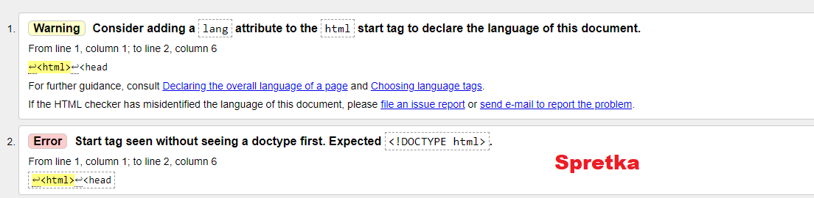
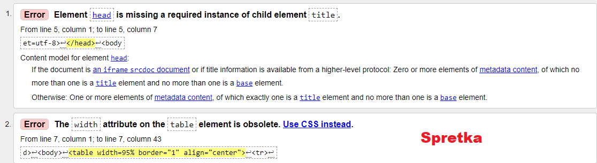

Program (moze byc aplikacja Web, czyli strona WWW) sprawdzajacy poprawnosc
dokumentu o okreslonej skladni, np. walidator kodu HTML, walidator kodu CSS. Pomyslne
przejscie walidacji oznacza zwykle, ze kod zostal napisany zgodnie z gramatyka (skladnia)
danego jezyka. Walidatory potrafia, wskazac miejsce bledu oraz podac przyczyne
błedu->moga podawac numer bledu.
Link do walidatora- http://validator.w3.org/
Przed bledami

Po naprawie bledow
